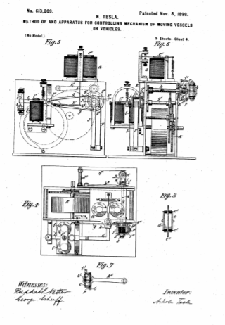

Descarga la patente original en esté enlace


Yo, Nikola Tesla, de 46, East Houston Street, Nueva York, Estados Unidos de América, electricista, declaro por la presente la naturaleza de esta invención y de qué manera se realizará la misma, que se describirá y determinará particularmente en y por la siguiente declaración;
El problema para el cual la invención objeto de la presente solicitud ofrece una solución completa y practicable, es el de controlar desde un punto dado el funcionamiento de los motores propulsores, el aparato de dirección y otros mecanismos transportados por un objeto en movimiento, como un bote, o cualquier embarcación flotante, o carro, como un automóvil, mediante el cual los movimientos y el rumbo de dicho cuerpo o embarcación pueden ser dirigidos y controlados desde la distancia, y cualquier dispositivo que lleve el mismo, puesto en acción en cualquier momento deseado .
Hasta donde yo sé, los únicos intentos de resolver este problema que hasta ahora han tenido algún éxito, se han realizado en relación con una cierta clase de embarcaciones, cuya maquinaria estaba gobernada por corrientes eléctricas transmitidas al aparato de control. a través de un conductor flexible. Pero este sistema está sujeto a limitaciones tan obvias como las que imponen la longitud, el peso y la resistencia del conductor que se puede utilizar prácticamente, por la dificultad de mantener con seguridad una alta velocidad de la embarcación o cambiar la dirección de movimiento de la misma. con la rapidez deseada, por la necesidad de efectuar el control desde un punto que es prácticamente fijo, y por muchos inconvenientes bien entendidos inseparablemente relacionados con tal sistema.
El plan que he perfeccionado no implica ninguna de estas objeciones, porque el uso de mi invención me permite emplear cualquier medio de propulsión, impartir al cuerpo en movimiento o al buque la mayor velocidad posible, controlar el funcionamiento de su maquinaria y Dirigir sus movimientos, ya sea desde un punto fijo o desde un cuerpo que se mueva y cambie su dirección por muy rápido que sea, y para mantener este control a grandes distancias, sin conexiones artificiales entre el buque y el aparato que gobierna sus movimientos, y sin restricciones como éstas imponer necesariamente.
En un sentido amplio, entonces, mi invención se diferencia de todos aquellos sistemas que prevén el control del mecanismo que lleva un objeto en movimiento y que gobierna su movimiento, en que no necesito alambres intermedios, cables u otra forma de conexión eléctrica o mecánica. con el objeto salvar los medios naturales en el espacio. Logro, sin embargo, resultados similares y de una manera mucho más practicable al producir ondas, impulsos o radiaciones que son recibidas a través de la tierra, agua o atmósfera por aparatos adecuados en el cuerpo en movimiento y provocan las acciones deseadas, mientras el cuerpo permanezca. dentro de la región activa o rango efectivo de tales corrientes, ondas, impulsos o radiaciones.
Los muchos y diferentes requisitos del objeto aquí contemplado, que implican medios peculiares para transmitir a una distancia considerable una influencia capaz de provocar, de manera positiva y confiable, estas acciones, requirieron el diseño de dispositivos y aparatos de un tipo novedoso con el fin de utilizar de la mejor manera varios hechos o resultados que, ya sea a través de mis propias investigaciones o las de otros, se han hecho prácticamente disponibles.
En cuanto a la parte de mi invención que implica la producción de ondas o variaciones adecuadas y el transporte de las mismas a un aparato receptor remoto capaz de ser operado o controlado por su influencia, puede llevarse a cabo de varias formas que son actualmente tiempo más o menos entendido. Por ejemplo, puedo pasar a través de un camino conductor, preferiblemente encerrando un área grande, una corriente que varía rápidamente y por inducción electromagnética de la misma, afectar a un circuito llevado por el cuerpo en movimiento. En este caso, la acción a una distancia dada será más fuerte cuanto mayor sea el área encerrada por el conductor y mayor sea la tasa de cambio de la corriente. Si estos últimos se generaran de las formas ordinarias, la tasa de cambio y, en consecuencia, la distancia a la que la acción estaría prácticamente disponible para el presente propósito, sería muy pequeño; pero adoptando los medios que he ideado, es decir, ya sea pasando a través de las corrientes de trayectoria de conducción de un alternador de alta frecuencia especialmente diseñado o, mejor aún, las de un condensador fuertemente cargado, se puede obtener una tasa de cambio muy alta, y el alcance efectivo de la influencia se extiende así sobre una vasta área, y ajustando cuidadosamente el circuito en el cuerpo en movimiento para que esté en sincronismo electromagnético exacto con las perturbaciones primarias, esta influencia puede ser utilizada a grandes distancias.
Otra forma de llevar a cabo mi invención es dirigir las corrientes o descargas de una máquina de alta frecuencia o condensador a través de un circuito, uno de cuyos terminales está conectado directa o inductivamente a tierra y el otro a un cuerpo, preferiblemente de gran superficie y en una elevación. En este caso de que el circuito en el cuerpo móvil esté dispuesto o conectado de manera similar, se producen diferencias de potencial en los terminales del circuito, ya sea por conducción o inducción electrostática, y se logra el mismo objeto. Nuevamente, para asegurar la mejor acción, el circuito de recepción debe ajustarse para que esté en sincronismo electromagnético con la fuente primaria como antes, pero en este caso los expertos en la técnica entenderán que, si el número de las vibraciones por unidad de tiempo sean las mismas.
Otra forma más es hacer pasar las corrientes simplemente a través del suelo conectando ambos terminales de la fuente de corrientes de alta frecuencia a tierra en puntos diferentes y remotos y utilizar las corrientes que se extienden a través del suelo para efectuar un circuito de recepción correctamente colocado y ajustado. Nuevamente, en este caso, si solo uno de los terminales del circuito receptor está conectado a tierra, el otro terminal está aislado, el ajuste en cuanto al sincronismo con la fuente requerirá que, en condiciones iguales, la longitud del cable sea la mitad de el que se utilizaría si ambos terminales estuvieran conectados o, en general, si el circuito tuviera la forma de bucle cerrado o bobina. Obviamente también, en el último caso, la posición relativa de los circuitos de recepción y transmisión es de importancia, mientras que,
Finalmente, puedo aprovechar, para llevar a cabo mi invención, oscilaciones eléctricas que no siguen ningún camino conductor particular, sino que se propagan en línea recta a través del espacio, de rayos, ondas, pulsos o perturbaciones de cualquier tipo, capaces de provocar el mecanismo. del cuerpo móvil en acción desde la distancia y a voluntad del operador por su efecto sobre los dispositivos de control adecuados.
En la siguiente descripción detallada me limitaré a una explicación de ese método y aparato únicamente que he encontrado que es el más práctico y eficaz, pero obviamente, mi invención en sus amplias características no se limita al modo especial y aparatos que he han ideado y describiremos aquí.
En cualquier caso, es decir, cualquiera de los planes anteriores o similares que pueda adoptar, y, en particular, cuando la influencia ejercida a distancia sobre el circuito receptor sea demasiado pequeña para afectar y accionar directa y confiablemente el aparato de control, yo Emplear relés sensibles auxiliares o, en general, medios susceptibles de ser puestos en acción por las influencias más débiles, para efectuar el control de los movimientos del cuerpo distante con el menor gasto de energía posible y a la mayor distancia practicable, extendiendo así el alcance y la utilidad de mi invento.
Una gran variedad de dispositivos eléctricos y de otro tipo, más o menos adecuados para detectar y utilizar acciones débiles, son ahora bien conocidos por los científicos y artesanos, y no es necesario enumerarlos todos aquí. Limitándome simplemente a lo eléctrico como el más practicable de tales medios, y refiriéndome sólo a aquellos que, aunque no son los más sensibles, están, quizás, más fácilmente disponibles, a partir del conocimiento más general que existe sobre ellos, puedo afirmar que Se puede usar un dispositivo que se conoce desde hace mucho tiempo y se usa como pararrayos, en conexión con tableros de distribución telefónicos para operar anunciadores y dispositivos similares, comprende una batería, cuyos polos están conectados a dos terminales conductores separados por un mínimo de espesor de dieléctrico. La fuerza electromotriz de la batería debe ser tal que fuerce la delgada capa dieléctrica muy cerca del punto de romperse, para aumentar la sensibilidad. Cuando una perturbación eléctrica alcanza un circuito así dispuesto y ajustado, se ejerce una tensión adicional sobre la película aislante que cede y permite el paso de una corriente, que puede utilizarse para hacer funcionar cualquier forma de aparato de control de circuito.
De nuevo, otro dispositivo que puede utilizarse para detectar efectos eléctricos débiles consiste en dos placas conductoras o terminales que tienen preferiblemente cables de cierta longitud unidos a ellos y están puenteados por una masa de partículas diminutas de metal u otro material conductor. Normalmente estas partículas, sueltas, no conectan las placas metálicas, pero bajo la influencia de una perturbación eléctrica producida a distancia, evidentemente por atracción electrostática, se presionan firmemente entre sí, estableciendo así una buena conexión eléctrica entre las dos. terminales. Este cambio de estado se puede utilizar de varias formas para el propósito anterior.
Aún otro dispositivo modificado que puede decirse que incorpora las características de ambos, se obtiene conectando las dos placas conductoras o terminales, antes mencionados, permanentemente con los polos de una batería que debería tener una fuerza electromotriz muy constante. En esta disposición, una perturbación eléctrica distante produce un efecto doble sobre las partículas conductoras y las películas aislantes entre ellas. Los primeros se acercan entre sí como consecuencia del aumento repentino de la atracción electrostática, y los segundos, debido a esto, así como al reducirse en espesor o en número, están sujetos a una tensión mucho mayor que no pueden resistir a.
Cuanto más estrecha sea la gama de vibraciones que aún pueden afectar de manera perceptible al circuito receptor, más seguro será este último frente a perturbaciones externas. Para asegurar el mejor resultado es necesario, como es bien sabido por los expertos, construir el circuito receptor, o aquella parte del mismo en la que se produce principalmente la vibración, de modo que tenga la mayor autoinducción posible y al mismo tiempo. tiempo la menor resistencia posible. De esta manera he demostrado la viabilidad de proporcionar un gran número de tales circuitos receptores - cincuenta o cien o más - cada uno de los cuales puede ser llamado o puesto en acción cuando se desee, sin que se interfiera con los demás. Este resultado hace posible que un operador dirija, simultáneamente, los movimientos de varios cuerpos, así como para controlar la acción de varios dispositivos ubicados en el mismo cuerpo, cada uno de los cuales puede tener un deber distinto que cumplir. En la siguiente descripción, sin embargo, mostraré un desarrollo adicional en esta dirección, a saber, cómo, haciendo uso de un solo circuito receptor, una gran variedad de dispositivos pueden ser accionados y cualquier número de funciones diferentes realizadas a voluntad y comando del operador distante.
Con respecto a los dispositivos sensibles antes mencionados, que se pueden considerar en términos generales como pertenecientes a una clase, en la medida en que el funcionamiento de todos ellos implica la ruptura de un mínimo de espesor de dieléctrico altamente tensado, debe indicarse de antemano que Es necesario hacer alguna provisión para restaurar automáticamente al dieléctrico sus cualidades aislantes originales, intactas, con el fin de permitir que el dispositivo sea utilizado en operaciones sucesivas.
Esto generalmente se logra mediante un suave golpeteo o vibración de los electrodos o partículas, o la rotación continua de los mismos, pero en una larga experiencia con muchas formas de estos dispositivos, he descubierto que tales procedimientos, si bien son adecuados en operaciones simples y comparativamente sin importancia, como señalización ordinaria, cuando simplemente se requiere que los efectos subsiguientes producidos en el circuito de recepción difieran en cuanto a su duración relativa únicamente, en cuyo caso es de poca o ninguna consecuencia si algunos de los efectos individuales se alteran o son incompletos, o incluso completamente perdido - no producen resultados satisfactorios en muchos casos, cuando puede ser muy importante que los efectos producidos sean exactamente los deseados y que ninguno falle. Para ilustrarlo, supongamos que un funcionario, Dirigir los movimientos de un buque de la manera descrita, debería encontrar necesario poner en acción un dispositivo especial en este último, o realizar una operación particular, quizás de momento vital, en un instante y posiblemente cuando, por diseño o accidente , la embarcación en sí o cualquier marca que indique su presencia está oculta a su vista. En este caso, una falla o acción defectuosa de cualquier parte del aparato podría tener consecuencias desastrosas y tales casos, en los que el funcionamiento seguro y oportuno de la maquinaria es de suma importancia, a menudo pueden presentarse en la práctica, y esta consideración me ha impresionado. con la necesidad de eliminar los defectos de los dispositivos y procedimientos actuales y de producir un aparato que, si bien es sensible, será también más confiable y positivo en su acción. En la disposición que se describe a continuación, estos defectos se superan de la manera más satisfactoria, permitiendo que miles de operaciones sucesivas, en todos los aspectos, sean realizadas por el aparato de control sin que se registre una sola irregularidad o error. Para una mejor comprensión de estos y otros detalles de la invención tal como los llevo a cabo ahora, me referiría a los dibujos adjuntos, en los que:
La figura 1 es una vista en planta de un recipiente y un mecanismo dentro del mismo.
La figura 2 es una sección longitudinal del mismo que muestra el mecanismo interior en alzado lateral.
La figura 3 es una vista en planta, parcialmente esquemática, de la embarcación, aparato y conexiones de circuito de la misma.
La figura 4 es una vista en planta a escala ampliada de una parte del mecanismo de control.
La figura 5 es una vista desde un extremo del mismo.
La figura 6 muestra el mismo mecanismo en alzado lateral.
La figura 7 es una vista lateral de un detalle del mecanismo.
La figura 8 es una vista en sección central a mayor escala de un dispositivo sensible que forma parte del circuito de recepción.
La figura 9 es una ilustración esquemática del sistema en su forma preferida.
La figura 10 es una vista de los diversos mecanismos empleados pero a mayor escala y dejando fuera o indicando convencionalmente ciertas partes de carácter bien entendido.
Con referencia a la Figura 1 y la Figura 2, A designa cualquier tipo de embarcación o vehículo que sea capaz de ser propulsado y dirigido, como un barco o un carro como un automóvil. Puede estar diseñado para llevar, en un compartimento B adecuado, objetos de cualquier tipo, según la naturaleza de los usos a los que se vaya a aplicar. El buque, en este caso, un bote, está provisto de maquinaria propulsora adecuada que se muestra como que comprende una hélice de tornillo C, asegurada al eje de un motor electromagnético D, que deriva su energía de las baterías de almacenamiento E, E, E , E.
Además del motor o motor propulsor, la embarcación lleva también un motor de dirección F más pequeño, cuyo eje se extiende más allá de sus cojinetes y está provisto de un tornillo sin fin que engrana con una rueda dentada G. Este último está fijado a un manguito b , se puede mover libremente sobre una varilla vertical H, y se gira en una u otra dirección según la dirección de rotación del motor F.
El manguito b de la varilla H está engranado a través de las ruedas dentadas H^1 y H^{11} con un eje G^1 montado en cojinetes verticales en la popa de la embarcación y que lleva el timón F^1 .
El aparato, por medio del cual se controla el funcionamiento tanto del mecanismo de propulsión como de dirección, implica, principalmente, un circuito receptor que, por las razones antes expuestas, se ajusta y se vuelve sensible a la influencia de ondas o impulsos que emanan de un aparato. fuente remota, siendo el ajuste para que el período de oscilación del circuito sea el mismo que el de la fuente o un armónico de la misma.
El circuito de recepción propiamente dicho, que se muestra esquemáticamente en las Figuras 3 y 10, comprende un terminal E^1 , conductor C^1 , un dispositivo sensible A^1 y un conductor A_{11} que conduce a tierra, convenientemente a través de una conexión a la quilla metálica B^1 del buque.
El terminal E^1 debe presentar una superficie conductora más grande y debe apoyarse lo más alto posible en un D^1 estándar , que se muestra roto en la Figura 2, pero tales disposiciones no siempre son necesarias. Es importante aislar muy bien el conductor C^1 , cualquiera que sea su soporte.
El circuito o camino que acabamos de mencionar forma también parte de un circuito local, el cual incluye un imán relé ay una batería a^1 , cuya fuerza electromotriz está, como se explicó anteriormente, tan determinada que aunque las capas dieléctricas en los dispositivos sensibles A^1 están sujetos a una gran tensión, pero normalmente resisten la tensión y no fluye una corriente apreciable a través del circuito local. Pero cuando una perturbación eléctrica alcanza el circuito, las películas dieléctricas se rompen, la resistencia del dispositivo A^1 se reduce repentina y enormemente y una corriente atraviesa el imán del relé a
El dispositivo sensible particular empleado se muestra en vistas generales y en detalle en las Figuras 4, 6, 7 y 8. Consiste en un cilindro metálico c con cabezas aislantes c^1 , a través del cual pasa una varilla metálica central c^{11} . En el cilindro se coloca una pequeña cantidad de granos d de material conductor, como un metal oxidado.
Una tira metálica d 1 , fijada a un poste inclinado d 11, se apoya contra el lateral del cilindro c , conectándolo con el conductor C 1 que forma parte del circuito. La varilla central c 11 se conecta al marco del instrumento y así a la otra parte del circuito a través del brazo metálico bifurcado e , cuyos extremos se sujetan con dos tuercas a los extremos salientes de la varilla, por lo que el el cilindro c está apoyado.
Para interrumpir el flujo de corriente de la batería que se inicia mediante la acción del dispositivo sensible A^1 se proporcionan medios especiales, que son los siguientes: El inducido e^1 del imán a , cuando es atraído por este último, cierra un circuito que contiene una batería b^1 y un imán f . La palanca del inducido f^1 de este imán está fijada a un eje de roca f^11 , al que está asegurado un escape de ancla g que controla los movimientos de un husillo g^1 accionado por un tren de reloj K.
El husillo g 1 tiene fijado un disco g^11 con cuatro pasadores b^11 , de modo que para cada oscilación del escape g, el husillo g^ 1 gira un cuarto de revolución.
Uno de los husillos en el tren de reloj, como h , está engranado para hacer la mitad de una revolución por cada cuarto de revolución del husillo g^1 . El extremo del eje anterior se extiende a través del lateral del bastidor y lleva un cilindro excéntrico h^1 que pasa a través de una ranura en una palanca h 11 pivotada hacia el lateral del bastidor.
El brazo en forma de horquilla e que soporta el cilindro de c se hace pivotar hasta el final de excéntrica h 1 , y la excéntrica y dicho brazo están conectados por un resorte en espiral i .
Dos pines i^1 , i^1 , se extienden desde la palanca h^11 , y uno de ellos siempre está en el camino de una proyección en el brazo e . Actúan para evitar el giro del cilindro c con el husillo hy la excéntrica. Será evidente que una media revolución del eje h enrollará el resorte i y al mismo tiempo subirá o bajará la palanca h^11 , y estas partes están dispuestas de manera que justo antes de que se complete la media revolución del eje el pasador i^1 , en contacto con la proyección o el pasador de parada p , se retira de su trayectoria y el cilindro c , obedeciendo a la fuerza del resorte i , se gira repentinamente de un extremo a otro, siendo su movimiento controlado por el otro pasador i^1 .
Además, el ajuste relativo al inducido f^1 o al imán f se realiza de tal manera que el pasador i^1 se retira en el momento en que el inducido casi ha alcanzado su posición extrema en su aproximación hacia el imán, es decir, cuando la palanca l que lleva el inducido f^1 , casi toca el inferior de los dos topes s s , Figura 5, lo que limita su movimiento en ambas direcciones.
La disposición que se acaba de describir ha sido el resultado de una larga experimentación con el objeto de superar ciertos defectos en dispositivos de este tipo, a los que se ha hecho referencia anteriormente. He descubierto que estos defectos se deben a muchas causas como, el tamaño, el peso y la forma desiguales de los granos, la presión desigual que resulta de esto y de la forma en que los granos se agitan generalmente, la falta de uniformidad en la conductividad de la superficie de las partículas debido al grosor variable de la capa oxidada superficial, la condición variable del gas o la atmósfera en la que se sumergen las partículas y a ciertas deficiencias, bien conocidas por los expertos, del aparato transmisor empleado hasta ahora, que se reducen en gran medida por el uso de mis bobinas de alta frecuencia mejoradas. Para eliminar los defectos en el dispositivo sensible, preparo las partículas para que sean en todos los aspectos lo más parecidas posible. Se fabrican con una herramienta especial que asegura su igualdad en tamaño, peso y forma, y luego se oxidan uniformemente colocándolos durante un tiempo determinado en una solución ácida de concentración predeterminada. Esto asegura la misma conductividad de sus superficies y detiene su deterioro adicional, evitando así un cambio en el carácter del gas en el espacio en el que están encerrados. Prefiero no enrarecer la atmósfera dentro del dispositivo sensible, ya que esto tiene el efecto de hacer que el primero sea menos constante con respecto a sus propiedades dieléctricas, sino simplemente asegurar un cierre hermético de las partículas y una rigurosa ausencia de humedad, lo cual es fatal. a un funcionamiento satisfactorio. Preparo las partículas para que sean lo más parecidas posible en todos los aspectos. Se fabrican con una herramienta especial que asegura su igualdad en tamaño, peso y forma, y luego se oxidan uniformemente colocándolos durante un tiempo determinado en una solución ácida de concentración predeterminada. Esto asegura la misma conductividad de sus superficies y detiene su deterioro adicional, evitando así un cambio en el carácter del gas en el espacio en el que están encerrados. Prefiero no enrarecer la atmósfera dentro del dispositivo sensible, ya que esto tiene el efecto de hacer que el primero sea menos constante con respecto a sus propiedades dieléctricas, sino simplemente asegurar un cierre hermético de las partículas y una rigurosa ausencia de humedad, lo cual es fatal. a un funcionamiento satisfactorio. Preparo las partículas para que sean lo más parecidas posible en todos los aspectos. Se fabrican con una herramienta especial que asegura su igualdad en tamaño, peso y forma, y luego se oxidan uniformemente colocándolos durante un tiempo determinado en una solución ácida de concentración predeterminada. Esto asegura la misma conductividad de sus superficies y detiene su deterioro adicional, evitando así un cambio en el carácter del gas en el espacio en el que están encerrados. Prefiero no enrarecer la atmósfera dentro del dispositivo sensible, ya que esto tiene el efecto de hacer que el primero sea menos constante con respecto a sus propiedades dieléctricas, sino simplemente asegurar un cierre hermético de las partículas y una rigurosa ausencia de humedad, lo cual es fatal. a un funcionamiento satisfactorio. Se fabrican con una herramienta especial que asegura su igualdad en tamaño, peso y forma, y luego se oxidan uniformemente colocándolos durante un tiempo determinado en una solución ácida de concentración predeterminada. Esto asegura la misma conductividad de sus superficies y detiene su deterioro adicional, evitando así un cambio en el carácter del gas en el espacio en el que están encerrados. Prefiero no enrarecer la atmósfera dentro del dispositivo sensible, ya que esto tiene el efecto de hacer que el primero sea menos constante con respecto a sus propiedades dieléctricas, sino simplemente asegurar un cierre hermético de las partículas y una rigurosa ausencia de humedad, lo cual es fatal. a un funcionamiento satisfactorio. Se fabrican con una herramienta especial que asegura su igualdad en tamaño, peso y forma, y luego se oxidan uniformemente colocándolos durante un tiempo determinado en una solución ácida de concentración predeterminada. Esto asegura la misma conductividad de sus superficies y detiene su deterioro adicional, evitando así un cambio en el carácter del gas en el espacio en el que están encerrados. Prefiero no enrarecer la atmósfera dentro del dispositivo sensible, ya que esto tiene el efecto de hacer que el primero sea menos constante con respecto a sus propiedades dieléctricas, sino simplemente asegurar un cierre hermético de las partículas y una rigurosa ausencia de humedad, lo cual es fatal. a un funcionamiento satisfactorio. y luego se oxidan uniformemente colocándolos durante un tiempo determinado en una solución ácida de concentración predeterminada. Esto asegura la misma conductividad de sus superficies y detiene su deterioro adicional, evitando así un cambio en el carácter del gas en el espacio en el que están encerrados. Prefiero no enrarecer la atmósfera dentro del dispositivo sensible, ya que esto tiene el efecto de hacer que el primero sea menos constante con respecto a sus propiedades dieléctricas, sino simplemente asegurar un cierre hermético de las partículas y una rigurosa ausencia de humedad, lo cual es fatal. a un funcionamiento satisfactorio. y luego se oxidan uniformemente colocándolos durante un tiempo determinado en una solución ácida de concentración predeterminada. Esto asegura la misma conductividad de sus superficies y detiene su deterioro adicional, evitando así un cambio en el carácter del gas en el espacio en el que están encerrados. Prefiero no enrarecer la atmósfera dentro del dispositivo sensible, ya que esto tiene el efecto de hacer que el primero sea menos constante con respecto a sus propiedades dieléctricas, sino simplemente asegurar un cierre hermético de las partículas y una rigurosa ausencia de humedad, lo cual es fatal. a un funcionamiento satisfactorio.
La posición normal del cilindro c es vertical y cuando se gira de la manera descrita, los granos en él simplemente se desplazan de un extremo al otro. Pero en la medida en que siempre caen por el mismo espacio y son sometidos a la misma agitación, son llevados, después de cada operación del relé, precisamente a la misma condición eléctrica, y ofrecen la misma resistencia al flujo de la corriente de la batería hasta que otro. impulso desde lejos llega al circuito receptor.
El imán relé a debe ser de tal carácter que responda a una corriente muy débil y sin embargo tener una acción positiva. Para asegurar la retracción de su armadura e 1 después de que la corriente se haya establecido a través del imán f y se haya interrumpido por la inversión del dispositivo sensible c , una barra de luz k se apoya en guías en el marco en posición para ser levantada por una extensión k 1 de la palanca del inducido ly para levantar ligeramente el inducido e 1 . Como una corriente débil normalmente puede fluir a través del dispositivo sensible y el imán del relé un, que sería suficiente para sujetar, aunque no bajar el inducido, es bueno observar esta precaución.
El funcionamiento del relé de imán una y la consiguiente operación del electro-imán f , como se describió anteriormente, se utilizan para controlar el funcionamiento del motor de propulsión y el aparato de dirección de la siguiente manera;
En el husillo g^1 que lleva el disco de escape g^11 , Figura 4 y Figura 6, hay un cilindro j de material aislante con una placa conductora o cabezal en cada extremo. Desde estas dos cabezas, respectivamente, se extienden placas o segmentos de contacto j^1 j^11 en lados diametralmente opuestos del cilindro. La placa j^11 está en conexión eléctrica con el marco del instrumento a través de la cabeza desde la que se extiende, mientras que tiras o cepillos aislados JJ^1 se apoyan sobre el extremo libre o cabeza del cilindro y la periferia del mismo respectivamente. De este modo se proporcionan tres terminales, uno siempre en conexión con la placa j^1 , la otra siempre en conexión con la placa j^11 , y la tercera adaptada para descansar sobre las tiras j^1 y j^11 en sucesión o sobre los espacios aislantes intermedios, según la posición en la que el conmutador sea llevado por el reloj el tren y el escape del ancla g .
K^1 K^11 , Figuras 1, 3 y 10, son dos imanes de relé, convenientemente colocados en la parte trasera del motor propulsor. Un terminal de una batería k^11 está conectado a un extremo de cada una de las bobinas de relé; el terminal opuesto a la escobilla J^1 , y los extremos opuestos de las bobinas de relé a la escobilla J y al marco del instrumento respectivamente. Como consecuencia de esta disposición, el relé K^1 o K^11 se energizarán, ya que la escobilla J 1 se apoya sobre la placa j^1 o j^11 respectivamente, o ambos relés estarán inactivos mientras que la escobilla J^1 se apoya en un espacio aislante entre las placas j^1 y j^11 .
Mientras que un relé, como K^1 , está energizado, su armadura cierra un circuito a través del motor F, que gira en una dirección para lanzar el timón a babor. Por otro lado, cuando el relé K 11 está activo, se cierra otro circuito a través del motor F que invierte su sentido de giro y desplaza el timón a estribor. Sin embargo, estos circuitos se utilizan al mismo tiempo para otros fines, y su curso es, en parte, a través de aparatos que describiré antes de seguir su curso.
La varilla fija H lleva un disco o cabezal aislante L, Figura 2, en cuyo lado inferior están asegurados seis cepillos, 1, 2, 3, 4, 5 y 6, Figura 3. El manguito b que rodea la varilla y es girado por el motor de dirección F lleva un disco L 1 , sobre cuya cara superior hay dos círculos concéntricos de placas de contacto conductoras. Los cepillos 1, 2, 3 y 4 se refieren al círculo interior de contactos, mientras que los cepillos 5 y 6 se refieren al círculo exterior de contactos.
El círculo exterior de contactos consta de dos placas largas. 7 y 8 en lados opuestos del disco, y una serie de placas más cortas, 9, 10, 11, 12, 13 y 14 en la parte delantera y trasera. Los conductores flexibles l^1 , l^11 conectan las placas 7 y 8 con los terminales del motor propulsor D, y los polos de la batería principal E se conectan a las escobillas 5 y 6 respectivamente, de modo que, mientras el timón está recto o girado hasta cierto ángulo a cada lado, la corriente se transporta a través de las escobillas 5 y 6 y los segmentos 7 y 8 al motor propulsor D.
El motor de dirección F también es impulsado por la corriente tomada de la batería principal E de la siguiente manera. Un conductor 15 de un polo de la batería conduce a una de las escobillas del conmutador, y de la otra escobilla pasa un conductor 16, a uno de los contactos de cada relé K^1 K^11 . Cuando uno de estos relés, como K^11 , está activo, continúa este circuito a través de un cable 19, a través de una bobina retenida o conjunto de bobinas en el motor F, y de allí al cepillo 1. De manera similar, cuando el otro el relé K 1 está activo, el circuito continúa desde el cable 18 a través de un cable 20, el segundo o conjunto inverso de bobinas de fluido y el cepillo 2.
Ambos cepillos 1 y 2, en todo momento cuando el timón no se gira más de cuarenta y cinco grados hacia un lado, están en contacto con una placa conductora larga 21, y un cepillo en cualquier posición del timón siempre está en contacto con dicha placa, y esta última está conectada por un conductor flexible 22 con el polo opuesto de la batería principal. Por lo tanto, siempre se puede hacer que el motor F gire en una dirección, cualquiera que sea la posición del timón, y se puede hacer que gire en cualquier dirección siempre que la posición del timón sea menor que un ángulo predeterminado, convenientemente cuarenta y cinco grados. desde la posición central.
Sin embargo, para evitar que el timón gire demasiado en cualquier dirección, se utiliza la placa aislada 23. Cualquier movimiento del timón más allá de un límite predeterminado coloca esta placa debajo de una u otra de las escobillas 1, 2 y rompe el circuito del motor F, de modo que el timón no puede ser impulsado más en esa dirección, sino, como será entendido, el aparato está en condiciones de girar el timón hacia el otro lado.
De manera similar, el circuito del motor propulsor D se controla a través de las escobillas 5 y 6 y los segmentos en el círculo exterior de contactos del cabezal L.Si los segmentos cortos a cada lado del círculo están aislados, el motor D se detendrá siempre que se de los cepillos 5 o 6 pasa a uno de ellos desde los segmentos más grandes 7, 8.
Es importante agregar que en todos los puntos de contacto donde ocurre una rotura, se deben tomar las medidas necesarias para superar las chispas y evitar la oscilación de las cargas eléctricas en los circuitos, ya que tales chispas y oscilaciones pueden afectar el dispositivo sensible. Es esta consideración principalmente la que hace aconsejable utilizar los dos relés K 1 K 11 que de otro modo podrían prescindirse. También deben colocarse lo más lejos posible del dispositivo sensible para proteger este último contra cualquier acción de fuertes corrientes variables.
Además del mecanismo descrito, la embarcación puede llevar cualquier otro dispositivo o aparato que se requiera para lograr cualquier objeto especial de mayor o menor importancia. A modo de ilustración, se muestra un pequeño motor m (Figuras 1 y 3), que convenientemente sirve para varios propósitos. Este motor se muestra conectado en serie con el inducido del motor de dirección F, de modo que, siempre que uno de los circuitos de este último se cierre por medio de los relés K^1 K^11 , el motor m también se hace girar, pero en todos los casos en el misma dirección. Su giro se opone a un resorte m 1 de modo que en funcionamiento normal, debido a que los circuitos del motor F están cerrados pero por poco tiempo, la palanca m 11que está sujeto a una de las ruedas del mecanismo de relojería M, con el que se engrana el inducido del motor, se moverá una corta distancia, y al cesar la corriente volverá a detenerse P. Pero si los circuitos del motor F están cerrado y abierto rápidamente en sucesión, cuya operación deja el timón intacto, entonces la palanca m^11 se mueve a un ángulo mayor, entrando en contacto con una placa metálica n , y finalmente, si se desea, con un poste n^1 .
Al entrar la palanca m^11 en contacto con la placa n , la corriente de la batería principal pasa por una u otra o ambas luces apoyadas en los estándares qq , según la posición de las escobillas 3 y 4 con respecto al segmento aislante 23. Pero como la proa L^1 que lleva los segmentos está orientada al timón, la posición de este último se determina de forma general observando las luces. Ambas luces pueden ser de colores, y al hacerlas parpadear cuando lo desee, el operador puede guiar por la noche el barco en su curso. Para tales fines también se proporcionan las normas rr , que deben pintarse con colores vivos para que sean visibles de día a grandes distancias.
Abriendo y cerrando los circuitos del motor F un mayor número de veces, preferiblemente determinado de antemano, la palanca m^11 se pone en contacto con el borne n^1 , cerrando así el circuito de la batería principal a través de un dispositivo o Figura 10 y trayendo este último en acción en el momento deseado. Mediante artilugios similares, o como se les ocurra fácilmente a los mecánicos, se puede operar cualquier número de dispositivos diferentes.
Con referencia ahora a la figura 9, que ilustra esquemáticamente el sistema que se practica al dirigir los movimientos de un barco;
En esta figura, S designa cualquier fuente de perturbación eléctrica u oscilaciones, cuya generación se controla mediante un interruptor adecuado contenido en la caja T.La manija del interruptor se puede mover en una sola dirección y se detiene en cuatro puntos tt^1 u u^1 , por lo que que, a medida que el mango pasa de un tope a otro, la fuente produce oscilaciones durante un intervalo de tiempo muy corto. Se producen así cuatro perturbaciones durante una revolución, y el circuito de recepción se ve afectado cuatro veces, pero se entenderá de la descripción anterior de los dispositivos de control en el barco, que el timón se moverá dos veces, una a la derecha y otra a la derecha. izquierda. Ahora coloco preferiblemente la manija del interruptor de modo que cuando se detenga en los puntos tt 1, es decir, a derecha o izquierda del operador, se le recuerda que la embarcación se está desviando hacia la derecha o hacia la izquierda de su rumbo, por lo que se facilita el control. Las posiciones normales de la empuñadura son, por tanto, en u u 1 , cuando no se actúa sobre el timón, y permanece en los puntos uu 1 , sólo el tiempo necesario. Dado que, como se ha dicho anteriormente, el funcionamiento del aparato es muy seguro, el operador está capacitado para realizar cualquiera de las operaciones previstas, sin siquiera ver la embarcación.
La forma de utilizar el aparato y el funcionamiento de los diversos instrumentos que lo componen es, en detalle, como sigue; Normalmente, la placa L 1 se gira de modo que el cepillo 2 descanse sobre el segmento aislado 23 y el cepillo 6 sobre uno de los segmentos cortos aislados en la parte trasera del círculo. En estas condiciones, el timón se girará a estribor y el circuito del motor D se interrumpirá entre las escobillas 5 y 6. Al mismo tiempo, solo uno de los circuitos del motor F, el controlado por el relé K^1 , es capaz de ser cerrado, ya que el cepillo 2, que conecta con el otro, está fuera de contacto con el segmento largo 21.
Suponiendo ahora que se desea poner en marcha la embarcación y dirigirla a un punto determinado. La manija T se gira desde su posición normal en el punto u^1 hasta el punto t en la caja de interruptores. Esto envía una perturbación eléctrica que pasa a través del circuito de recepción en el buque, afecta al dispositivo sensible a la A^1 y se inicia el flujo de corriente a través del circuito local, incluyendo dicho dispositivo, el relé de una y la batería un 1 . Esto, como se ha explicado anteriormente, hace girar el cilindro j y hace que la escobilla J^1 pase del aislamiento al contacto j^1 .
La batería k^11 , y esta última cierra ese circuito del motor F que, a partir de la placa 22, que está conectado permanentemente con un polo de la batería principal, se completa a través del cepillo 1, el campo del motor F, cable 19, el inducido del relé K^11 , cable 16, el motor m , las escobillas y el conmutador del motor F, y el cable 15 al terminal opuesto de la batería E. El motor F se pone así en funcionamiento para cambiar el timón a estribor, pero el el movimiento de la placa L 1 , que sigue, lleva el cepillo 6 de nuevo al segmento 8 y cierra el circuito del motor propulsor, que pone en marcha la embarcación.
Se permite que el motor F funcione hasta que el timón se haya girado lo suficiente para dirigir la embarcación en la dirección deseada, cuando la manija T se gira al punto u . Esto produce otra acción del relé una y cepillo J 1 se desplaza sobre el aislamiento y ambos relés K 1 y K 11 son inactivos.
El timón permanece en la posición a la que ha sido desplazado por el motor F. Si luego se desea desplazarlo a babor, o en la dirección opuesta a aquella en la que se movió por última vez, simplemente se gira la empuñadura T para apuntar t 1 y se deja allí hasta que el motor F - que ahora es accionado por el relé K 1 , cuyo circuito está cerrado por las tiras J 1 que entran en contacto con la placa j 11 - haya hecho su trabajo.
El movimiento de la manija T al siguiente punto arroja ambos relés K 1 y K 11 , y el siguiente movimiento provoca un desplazamiento del timón a babor, y así sucesivamente. Supongamos, sin embargo, que después de que el timón se haya colocado en cualquier ángulo con respecto a su posición central, sería conveniente desplazarlo aún más en la misma dirección. En tal caso, el mango se mueve rápidamente sobre dos puntos, de modo que el circuito que movería el timón en la dirección opuesta se cierra durante un intervalo de tiempo demasiado corto para producir un efecto apreciable, y se deja reposar en el tercer punto hasta que el timón se cambia a la posición deseada, cuando la manija se mueve al siguiente punto, que nuevamente lanza ambos relés K 1 y K 11. Se entenderá que si el mango se mantiene durante un tiempo suficientemente largo en cualquiera de los puntos t o t 1 el motor F simplemente gire la placa L 1 en una dirección o la otra hasta que los circuitos de los motores D y F están rotos. Además, es evidente que un relé K o K 11 siempre estará operativo para arrancar el motor F.
Como se explicó anteriormente, el período de funcionamiento más largo del que es capaz el motor F en condiciones normales de uso no permite que el motor m mueva el brazo m 11 en contacto con la placa n . Pero si la manija T se gira con cierta rapidez, una serie de impulsos de corriente se dirigirán a través del motor m , pero, como estos tienden a girar el motor F en direcciones opuestas, no afectan sensiblemente a este último, sino que actúan para hacer girar el motor. m contra la fuerza del resorte en espiral.
La invención que he descrito resultará útil de muchas formas. Se pueden utilizar embarcaciones o vehículos de cualquier tipo adecuado, como botes salvavidas, de despacho, prácticos o similares, o para llevar cartas, bultos, provisiones, instrumentos, objetos o materiales de cualquier descripción, para establecer comunicación con regiones inaccesibles y explorar la condiciones existentes en el mismo, para la matanza o captura de ballenas u otros animales del mar, y para muchos otros fines científicos, de ingeniería o comerciales.
Habiendo ahora descrito y comprobado en particular la naturaleza de mi dicho invento y de qué manera se realizará el mismo, declaro que lo que reclamo es:
Fechado 13 de diciembre de 1898
Haseltine, Lake & Co.,
45, Southampton Buildings, Londres, WC,
Agentes del solicitante.